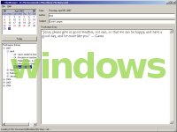
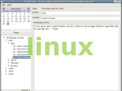

ThotKeeper is a simple, open source, daily journal application created by C. Michael Pilato for his wife, Amy. Amy was recording journal entries on paper or in a growing Microsoft Word document. Each of these methods has its pros and cons, but the cons frightened Mike. Paper is charming and personal, but gets lost or damaged awfully easily. Word documents are digital and easy to backup, but bind the user to the availability of software which parses that proprietary format. Mike figured an XML storage format would work just fine, and with enough GUI goodness to navigate the hunks of information in the file, Amy might actually be encouraged to write more. So in 2004, he began working on ThotKeeper.
ThotKeeper is written in the Python programming language, which means it runs on many different platforms. It's built around the wxPython toolkit, which uses native widgets on the various platforms. That means that when you run ThotKeeper on a Windows machine, it looks like a native Windows application; when running under Linux, it looks like a Linux/GTK application.
Others have since come along to help Mike develop ThotKeeper. You can see their contributions — and even learn how to make some of your own — by visiting the project's Google Code site at http://thotkeeper.googlecode.com/.
| Windows | Ubuntu Linux |
|---|---|
|  |  |
To run ThotKeeper, you need a few bits of software:
There are two ways to get ThotKeeper:
ThotKeeper is license under the New BSD License.
{kind=link}
{kind=link}